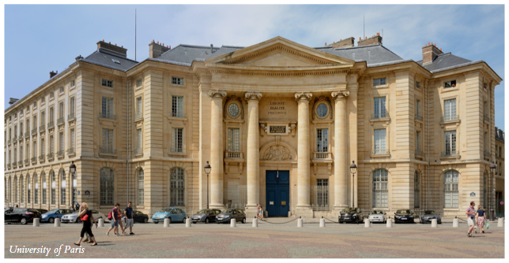

Paris is the capital and most populous city of France. Situated on the Seine River in the north of the country, it was founded in the 3rd century BC by a Celtic people called the Parisii, who gave the city its name. By the 12th century, Paris was the largest city in the western world, a prosperous trading centre, and the home of the University of Paris (below), one of the first in Europe. There are gardens called the Tuileries (above) in the center of the city, along the river; there used to be a palace there that was burned in 1871 by the Commune.
